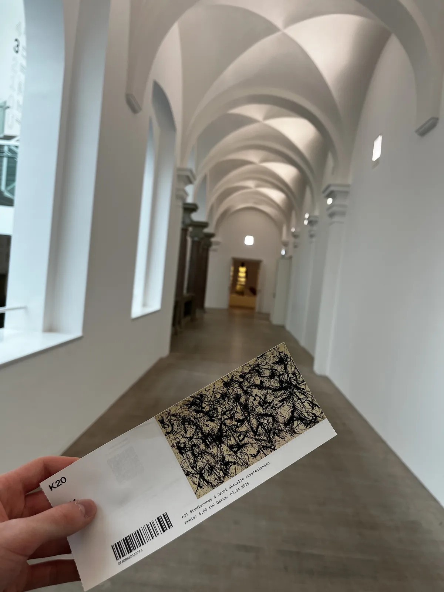
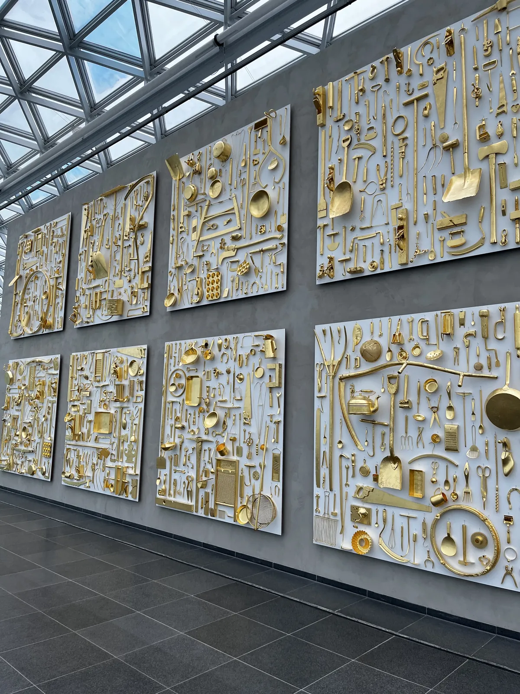
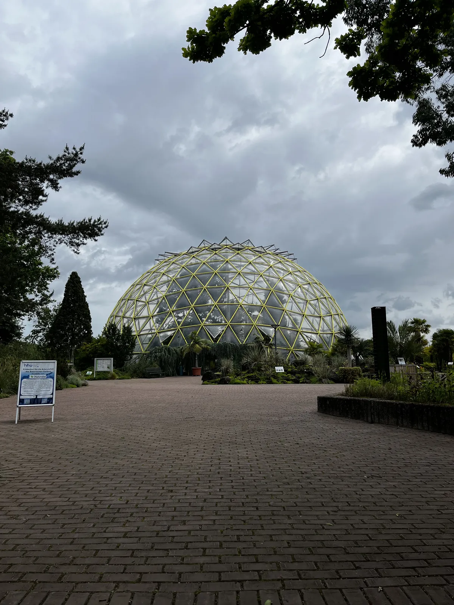

Ontdek Düsseldorf voorbij de bekende plekken
Hidden gems, lokale tips en onverwachte routes
Beyond Düsseldorf laat je de stad zien zoals locals haar kennen. Niet alleen de bekende trekpleisters, maar juist creatieve buurten, rustige plekken, kleine cafés, street art en bijzondere verhalen.
Deze website helpt bezoekers om verborgen parels van Düsseldorf te vinden en de stad op een andere manier te beleven.
Bekijk hidden gems


Fotogalerij
Beelden van Düsseldorf


